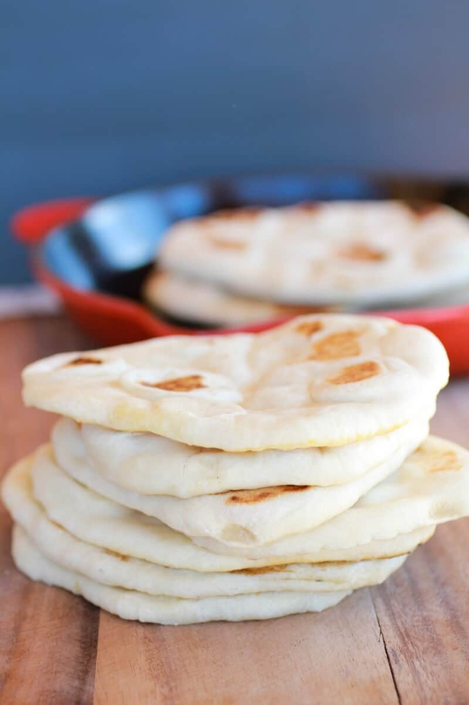

Back to Home
How to make: Pita bread
Link to recipe

Pita Bread Recipe
Pita or pitta, is a family of yeast-leavened round flatbreads baked from wheat flour, common in the Mediterranean, Middle East, and neighboring areas.
This homemade pita bread recipe is easy to make and requires a few ingredients you may already have on hand!
Mix up the very simple dough, let it rise, and experience the magic of fresh, warm, perfectly puffy homemade pita bread.
Tip:You can prepare pita dough and store it in the fridge for up to 1 week.
Ingredients:
- Water
- Yeast
- All purpose flour
- Pinch of sugar
- Kosher salt
- Extra virgin olive oil
Directions
- Combine 1 cup lukewarm water in a large mixing bowl with yeast and sugar. Stir until dissolved.
- Add ½ cup flour and whisk together.
- Place the mixing bowl in a warm (not hot) place, uncovered. Wait about 15 minutes or until mixture is frothy and bubbling a bit
- Now add salt, olive oil, and the remaining flour (keep about ½ cup of the flour for dusting later). Stir until mixture forms a shaggy mass.
- Dust with a little flour, then knead the mixture inside the bowl for about 1 minute incorporating any stray bits.
- Dust a clean working surface with just a little bit of flour. Knead lightly for 2 minutes or so until smooth. Cover and let the dough rest for 10 minutes.
- Then knead again for a couple more minutes. The dough should be soft and a little bit moist.
- Clean the mixing bowl and give it a light coating of extra virgin olive oil. Put the dough back in the bowl and turn it a couple times just to coat it a bit with the olive oil.
- Cover the mixing bowl tightly with plastic wrap, then cover it with a kitchen towel. Put the bowl in a warm (not hot) place. Leave it for 1 hour or until the dough rises to double its size.
- Gently deflate the dough and place it on a clean work surface. Divide the dough into 7 to 8 equal pieces and shape them into balls. Cover with a towel and leave them for 10 minutes or so.
- Using a floured rolling pin, roll one of the pieces into a circle that's 8-9 inches wide and about a quarter inch thick.
- Heat a cast iron skillet over medium-high heat.
- Drizzle a tiny bit of extra virgin olive oil and wipe off any excess. Working with one pita at a time, lay a rolled-out pita on the skillet and bake for 30 seconds, until bubbles start to form.
- Using a spatula, flip the pita over and cook for 1-2 minutes on the other side, repeat until fully cooked and is toasted as desired.